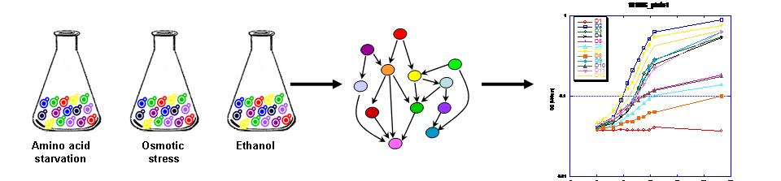

|
 Understanding the function and organization of molecular networks is intricately tied into how this remarkable functionality arised. Evolution of gene regulation is emerging as a major driving force in generating the variety of life. It has been shown that transcriptional programs are fine tuned for the orchestration and optimal timing of tens and even hundreds of genes. Moreover, regulation of core biological processes can dramatically vary between organisms. It is a remarkable feat that the evolving network not only needs to reach a better solution, but that it needs to do so through a path of intermediates , each providing increased fitness. We are combining theoretical, experimental and computational approaches to understand the fitness landscape and the evolutionary dynamics of molecular networks. As a follow up on our Genetic Genomics efforts, we are focusing on fitness under multiple conditions as a phenotype. We ask, how do small changes in the molecular network influence fitness under different environmental conditions? Given a better understanding of the dynamics of "small evolutionary steps" we would like to understand how a series of these steps cumulate in novel function and the complexity of molecular networks. |